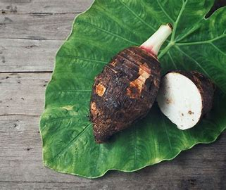
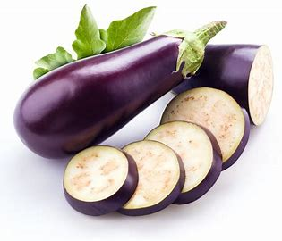
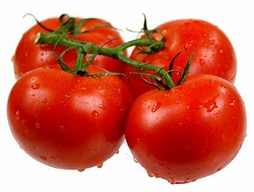
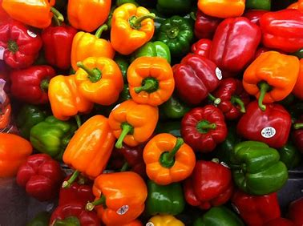
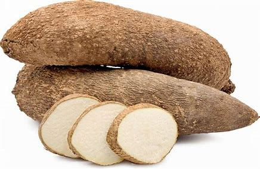
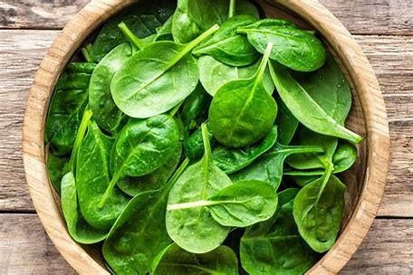

African Taro
Taro (Colocasia esculenta), also called eddo or dasheen, is a tropical plant native to Southeast Asia that produces a starchy root vegetable with a brown outer skin and a white flesh with purple specks. Although commonly referred to as "taro root," the vegetable is technically not a root but a corm, or underground stem.

African Sweet Potatoes
Sweet potato is known in the Philippines as Kamote, it is a sweet-tasting starchy root vegetable. It has a thin, brown skin on the outside with orange color flesh, but other varieties are white, purple or yellow. You can eat sweet potatoes whole or peeled.

African Aubergine
Aubergine, also known as eggplant in North America, is a versatile and nutritious vegetable that is widely used in various cuisines around the world. This glossy, purple-skinned vegetable belongs to the nightshade family, which also includes tomatoes and bell peppers. In this article, we will explore the origins, nutritional benefits, and culinary uses of aubergine.

Tomatoes
In cooking, tomatoes are usually used alone or paired alongside other true vegetables in savory dishes. As a result, they’ve earned a reputation as a vegetable, even though they’re technically a fruit by scientific standards.

Bell Pepper
Like the tomato, bell peppers are botanical fruits but culinary vegetables. Pieces of bell pepper are commonly used in garden salads and as toppings on pizza. There are many varieties of stuffed peppers prepared using hollowed or halved bell peppers. Bell peppers (and other cultivars of Capsicum annuum) may be used in the production of the spice paprika.

Yam
Yams of African species must be cooked to be safely eaten, because various natural substances in yams can cause illness if consumed raw. The most common cooking methods in Western and Central Africa are by boiling, frying or roasting.

Spinach
Spinach is eaten both raw, in salads, and cooked in soups, curries, or casseroles. Notable dishes with spinach as a main ingredient include spinach salad, spinach soup, spinach dip.